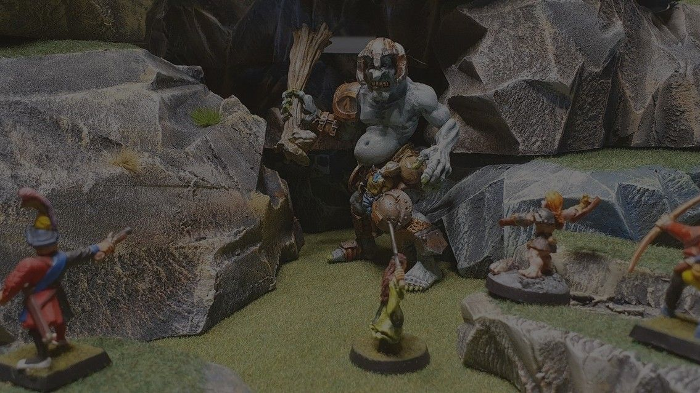
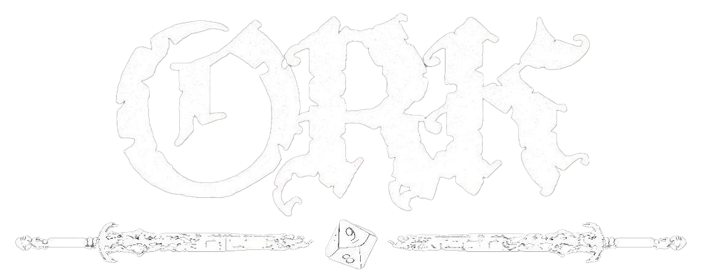
Bli med i ORK
Fredagskveld på låven kl. 17:00 til 20:00
Rollespill, brettspill, miniatyrer, cosplay og annen nerdekultur i Nord-Odal. Nye medlemmer er alltid velkomne, enten du har spilt i ti år eller aldri har kastet en terning.
12+ Ingen forkunnskaper, ingen påmelding. Bare bli med!
Hva er ORK?
Odal Rollespillklubb er en ideell forening og en alternativ ungdomsklubb i Nord-Odal, stiftet i 2018 og registrert i Frivillighetsregisteret.
Vi er et rusfritt og trygt sted for alle fra 12 år og oppover, uavhengig av kjønn, legning og tro. Her kan du senke skuldrene, bli kjent med folk som liker det samme som deg, og bli god på noe nytt.
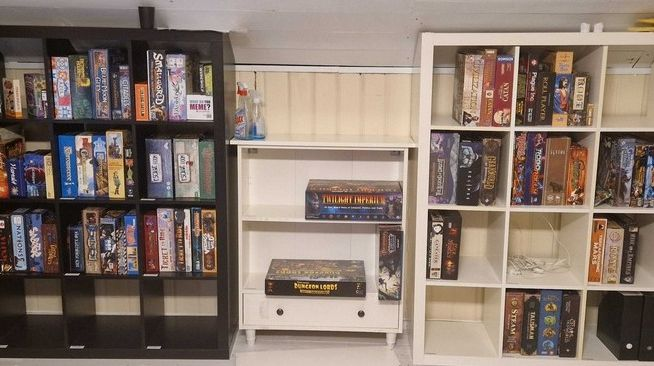
Alle fredager fra kl. 17:00: brettspill, rollespill og miniatyrer. Vi er åpne for det meste!
Siste fredag i måneden er kvelden 18+ (URUKHAI). Den uka møtes vi også til brettspill på biblioteket på søndagen.
Hva er Åpen Låve?
Navnet kommer av at lokalet vårt ligger inne på en låve. Innenfor finner du et godt og innredet klubblokale laget for brettspill, rollespill og nerding. Hver fredag er døra åpen fra kl. 17:00 til 20:00, uten påmelding og uten krav. Etter kl. 20:00 kan låven holdes åpen for eldre medlemmer så lenge en ansvarsperson er til stede. Kom når det passer deg, og velg selv hva du vil være med på.
- Brettspill fra hylla, eller ta med ditt eget.
- Rollespill for deg som vil være med i en gruppe, eller bare se hvordan det foregår.
- Miniatyrer og maling ved malebordet, med utstyr fra klubben.
- Eller bare heng og prat med folk som liker det samme som deg.
Unntak: siste fredag i måneden er 18+ (URUKHAI). Den uka møtes vi også til brettspill på biblioteket på søndagen.
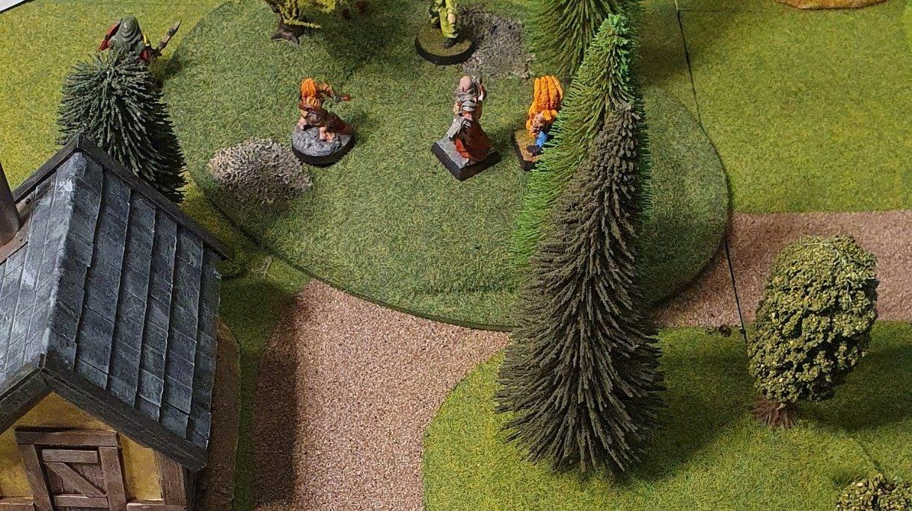
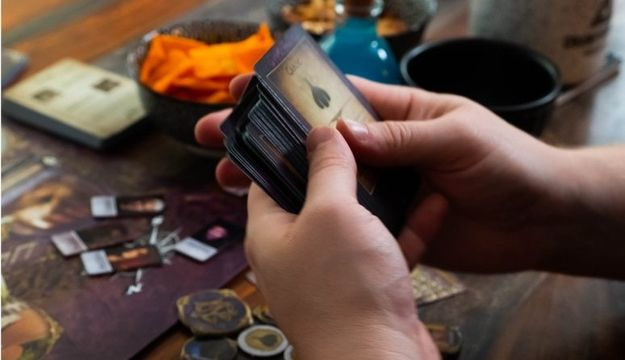
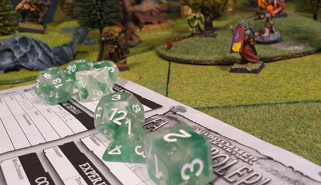
Dette driver vi med
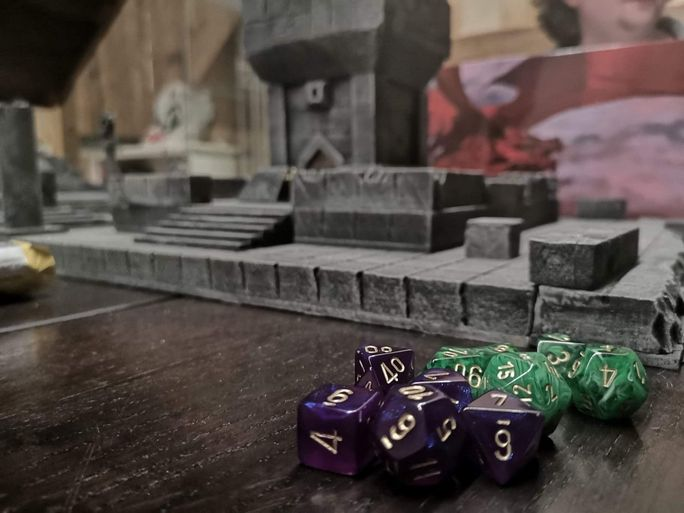
Rollespill
Eventyr rundt bordet. Terninger, regelbøker og spilledere har vi.
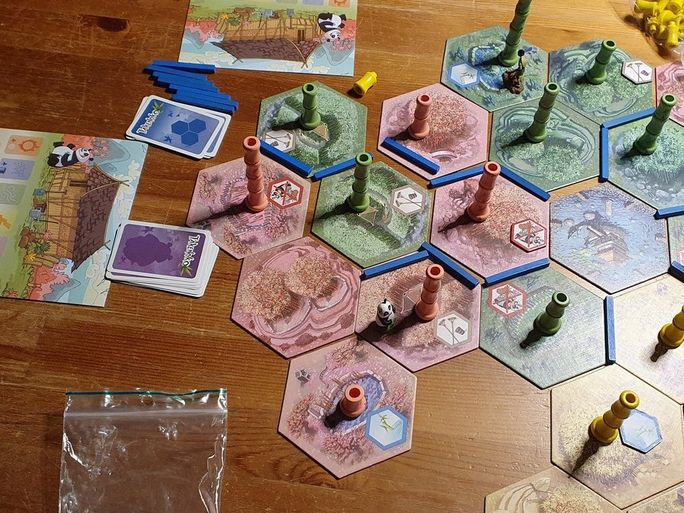
Brettspill
Fra påskehytta-klassikere til moderne strategispill.
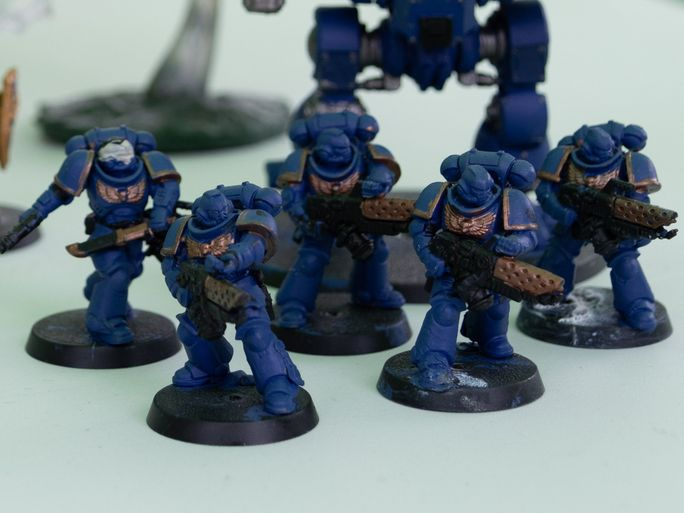
Miniatyrer
Mal figurer, bygg landskap og led hæren din.
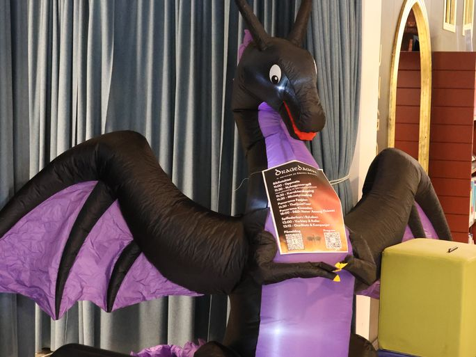
Og mer til
Cosplay, laiv, gaming, tegneserier, sci-fi og fantasy.
Hva er rollespill?
Tenk på det som en fortelling dere lager sammen. En spilleder beskriver verdenen, du bestemmer hva figuren din gjør, og terningene avgjør om det går bra. Det finnes mange måter å spille på:
- Bordrollespill
- Dungeons & Dragons, Call of Cthulhu og mange flere. Penn, papir og terninger rundt et bord.
- Laiv
- Levende rollespill. Du spiller figuren din med kropp og stemme, ofte i kostyme.
- Miniatyrspill
- Taktiske slag med malte figurer på et landskap, for eksempel Warhammer og Mordheim.
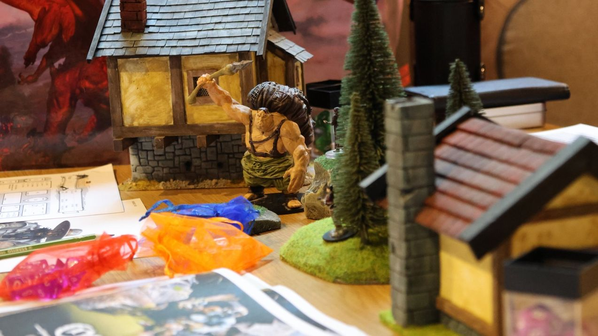
Hva er miniatyrmaling?
Figurene kommer grå i esken. Med grunning, tynne lag akrylmaling og en liten pensel gjør du dem til dine egne. Det er en rolig hobby som passer like godt alene som rundt et bord med andre.
- Du trenger ikke kjøpe noe. Klubben har maling, pensler og grunning.
- Vi har malekvelder der du lærer teknikkene steg for steg.
- Figurene du maler kan du bruke i rollespill og miniatyrspill etterpå.
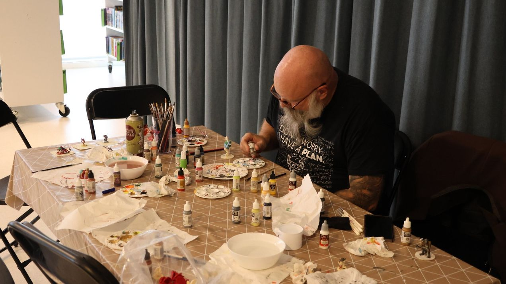
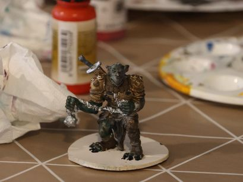
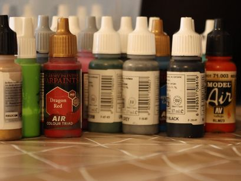
Bli medlem
Medlemskapet gjelder for ett år og gir deg:
- Alle arrangementer, turneringer og spillkvelder
- Tilgang til klubbens Discord og andre kanaler
- Stemmerett på årsmøtet, og mulighet til å forme klubben
Kontingent per år
150 kr under 30 år200 kr fra 30 år
Betal med Vipps
Søk opp #568725 eller ORK.Odal Rollespillklubb i Vipps, eller skann koden.
Skriv i meldingen:
- Navn på medlemmet
- Fødselsår
- Gjerne Discord-navn eller e-post
Eller kom innom en fredag, så ordner vi det der.
Her finner du oss
Skann en kode. Les mer på nettsiden, si hei på Discord, eller følg oss for program og bilder.
odalrollespill.noodalrollespillklubb@gmail.com+47 99 51 52 52Org.nr. 821 553 482